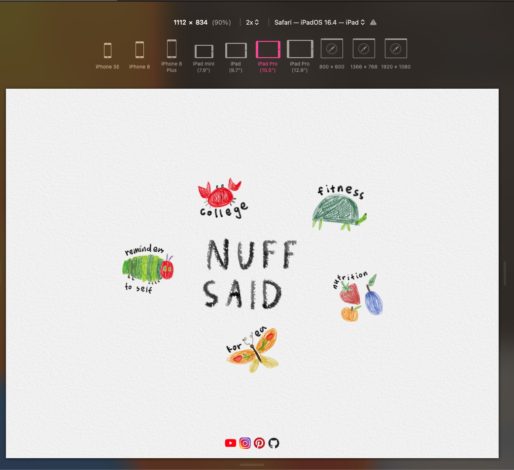

Include the following meta tag in your HTML <head> section to set the viewport and enable responsive scaling:
<meta name="viewport" content="width=device-width, initial-scale=1.0">This ensures your website scales correctly on different devices by defining the visible width to match the device’s screen width.
Instead of setting dimensions in fixed pixels, use percentages for widths. This allows elements to resize dynamically based on the screen size.
/* Example: Setting a container to occupy 80% of the screen width */
.container {
width: 80%;
}Set font sizes using rem for scalable and accessible typography. Avoid vw (viewport width) for fonts, as it can make text too small on mobile devices.
/* Example: Font size scalable based on the root font size */
body {
font-size: 1rem; /* Base size */
}
h1 {
font-size: 2.5rem; /* Scales proportionally */
}Media queries allow you to apply different styles for various device sizes. Here are some common breakpoints:
@media (min-width: 768px) and (max-width: 1024px) {
body {
font-size: 1.2rem;
}
.container {
padding: 20px;
}
}@media (max-width: 768px) {
body {
font-size: 1rem;
}
.container {
padding: 10px;
}
}@media (max-width: 480px) {
body {
font-size: 0.9rem;
}
.container {
padding: 5px;
}
}These queries allow you to tweak layouts, font sizes, padding, and more for different screen sizes.
To test your site’s responsiveness:
This tool simulates different device resolutions and orientations, making it easier to spot and fix layout issues.
